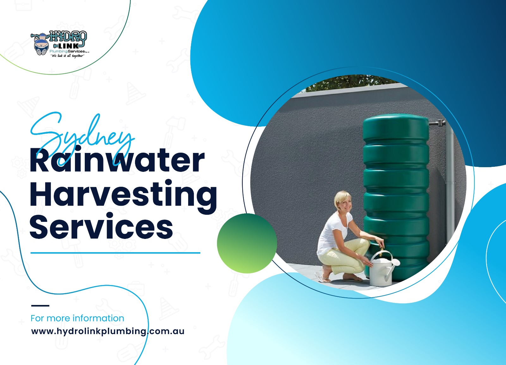

Hydro Jet Cleaning: Benefits and Warning Signs
Hydro jet cleaning is a highly effective method of cleaning clogged or dirty pipes. It uses a high-pressure stream of water to blast away debris, grease, and other buildup inside pipes, leaving them clean and clear. Maintaining clean pipes is essential for the proper functioning of your plumbing system and the health and safety of your family.
Over time, pipes can become clogged with debris, grease, hair, and other materials. This can lead to slow draining sinks and toilets, foul odors, and even sewage backups. Hydro jet cleaning is an effective way to remove these blockages and keep pipes clean, preventing future clogs and potential damage to your plumbing system.
Regular maintenance of your plumbing system, including hydro jet cleaning, can help you save money in the long run by preventing costly repairs and replacements. It can also improve the quality of your water and the overall efficiency of your plumbing system.
In the following sections, we will take a closer look at the benefits of hydro jet cleaning, warning signs that your pipes may need cleaning, and the importance of maintaining clean pipes.
What is Hydro Jet Cleaning?
Hydro jet cleaning is a plumbing method that uses high-pressure water streams to clean the inside of pipes. It is highly effective at removing stubborn clogs, debris, and other buildup in pipes that traditional drain cleaning methods cannot remove. Hydro jet cleaning is an efficient and eco-friendly way to maintain the health and longevity of your plumbing system.
During the hydro jet cleaning process, a specialized machine is used to blast water through a hose and into the pipes. The water pressure can range from 1,500 to 4,000 pounds per square inch (psi), depending on the severity of the clog. The high-pressure water stream creates a powerful force that can break up even the toughest blockages, including tree roots and mineral buildup.
Hydro jet cleaning is beneficial for all types of pipes, including those made of PVC, copper, and steel. It is especially useful for cleaning sewer lines, which are prone to clogs due to the large amount of debris that flows through them. Hydro jet cleaning can not only remove existing clogs but can also prevent future ones from forming by thoroughly cleaning the pipes.
Benefits of Hydro Jet Cleaning
Hydro jet cleaning offers several benefits for homeowners who want to maintain clean and efficient plumbing systems. Some of the key benefits of hydro jet cleaning are:
- Removes stubborn clogs: Traditional drain cleaning methods, such as using a plunger or drain snake, may not be effective at removing stubborn clogs. Hydro jet cleaning is a powerful method that can blast away even the toughest blockages, including tree roots, grease buildup, and mineral deposits.
- Prevents future clogs: Hydro jet cleaning not only removes existing clogs but also prevents future ones from forming. By thoroughly cleaning the inside of pipes, hydro jet cleaning removes debris and buildup, which can reduce the likelihood of clogs and blockages in the future.
- Improves water flow: Over time, pipes can become clogged with debris, which can lead to reduced water flow and slow draining sinks and toilets. Hydro jet cleaning can restore the flow of water, improving the efficiency of your plumbing system.
- Saves money in the long run: Regular maintenance of your plumbing system, including hydro jet cleaning, can prevent costly repairs and replacements in the future. By investing in hydro jet cleaning, you can save money in the long run and avoid the inconvenience of plumbing emergencies.
In summary, hydro jet cleaning is an efficient and effective way to maintain the health and longevity of your plumbing system. It offers several benefits, including removing stubborn clogs, preventing future clogs, improving water flow, and saving money in the long run.
Warning Signs that Your Pipes Need Hydro Jet Cleaning
Pipes are an essential part of any plumbing system, and it is important to keep them clean and free of debris to ensure efficient water flow. Here are some warning signs that indicate your pipes may need hydro jet cleaning:
- Slow draining sinks or toilets: If your sinks or toilets are slow to drain, it may be a sign of a blockage in the pipes. A clog can become more severe over time, leading to a complete blockage and potential damage to your plumbing system.
- Gurgling sounds from pipes: If you hear gurgling sounds coming from your pipes when you flush the toilet or use the sink, it may be a sign of a clog. Gurgling sounds indicate that air is trapped in the pipes, which may be due to a blockage preventing water from flowing freely.
- Foul odors coming from drains: If you notice foul odors coming from your drains, it may be a sign of bacteria buildup in your pipes. Bacteria can thrive in stagnant water, and a clog can create the perfect environment for them to grow and produce unpleasant odors.
- Multiple clogged drains in the home: If you have multiple clogged drains in your home, it may be a sign of a blockage in your main sewer line. This can cause backups and potentially damage your plumbing system if not addressed promptly.
In conclusion, these warning signs are indicators that your pipes may need hydro jet cleaning. If you notice any of these signs, it is important to contact a professional plumber to assess the situation and recommend the best
DIY vs Professional Hydro Jet Cleaning
Hydro jet cleaning is a powerful and effective way to clean out your plumbing system. While some homeowners may attempt to DIY this process, there are some pros and cons to consider before diving in. Here are some key points to consider when deciding between DIY and professional hydro jet cleaning:
Pros and cons of DIY hydro jet cleaning
The main advantage of DIY hydro jet cleaning is cost savings. Renting or purchasing a hydro jet machine may be cheaper than hiring a professional plumber. However, there are several potential drawbacks to consider. First, hydro jet machines are powerful and can cause damage to your pipes if not used correctly. Additionally, DIY hydro jet cleaning may not be effective if you don't have the proper knowledge or experience.
Benefits of hiring a professional plumber for hydro jet cleaning
Hiring a professional plumber for hydro jet cleaning offers several benefits. First, plumbers have the knowledge and experience to effectively clean out your plumbing system without causing damage. They also have access to professional-grade equipment that is more powerful and effective than DIY machines. Additionally, professional plumbers can identify any potential issues with your plumbing system and address them before they become more costly problems.
Cost comparison between DIY and professional hydro jet cleaning
The cost of DIY hydro jet cleaning varies depending on the cost of renting or purchasing a machine. However, it is important to note that the cost of potential damage to your plumbing system or the cost of not fully resolving the issue should also be considered. Hiring a professional plumber may be more expensive upfront, but it can save you money in the long run by preventing further damage and costly repairs.
In conclusion, while DIY hydro jet cleaning can work, when it comes to your plumbing - it's often best handled by a professsional.
Conclusion
Hydro jet cleaning is an effective way to clean out your plumbing system and ensure that your pipes are running smoothly. Whether you choose to DIY or hire a professional plumber, there are several benefits and warning signs to keep in mind.
Regular maintenance is key to keeping your pipes clean and preventing costly repairs in the future. Signs that your plumbing system may need hydro jet cleaning include slow drains, foul odors, and recurring clogs. By addressing these issues early on, you can prevent more serious problems down the line.
At Hydrolink Plumbing, we offer professional hydro jet cleaning services to keep your plumbing system in top condition. Our experienced plumbers use the latest equipment and techniques to clean out your pipes and identify any potential issues. Contact us at 0433 629 517 or info@hydrolinkplumbing.com.au for all your plumbing needs.
 Call Hydrolink Plumbing
Call Hydrolink Plumbing